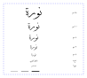
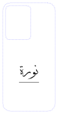
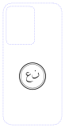
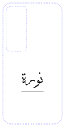
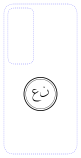

ملحق لـملخص حفر الكفرات، 16 نوفمبر 2026. عيّنات لنا لا للبيع.
عيّنات كفرات الجلد: ملفات الليزر
قصاصة اختبار للجلد النباتي الدباغة، وتصميمان على ظهر كفري آيفون 17 وجالكسي S25. كلها حفر بلا قص. الاسم والحرفان أمثلة لا تخص أحدًا.
الملفات





الأزرق المتقطع مرجع يُطفأ إخراجه: حدود القصاصة، أو حدود الكفر ومنطقة الكاميرا. الرسم من خلف الكفر، فالكاميرا في الأعلى يسارًا.
الترتيب
- القصاصة أولًا، على جلد نباتي الدباغة موثّق. منها يُعرف أصغر خط يُقرأ وأرفع خط يبقى، والقدرة والسرعة اللتان تعطيان حفرًا داكنًا بلا احتراق للحواف.
- ثم كفر واحد من عيّنات المورد بالإعدادات التي نجحت. تُعدَّل أحجام التصميم إن ظهر في القصاصة أن الخط الصغير لا يُقرأ.
- ثم المقارنة بكفر مطبوع الأحرف، وهي العيّنة التي يطلبها الملخص قبل البناء على تمييز الحفر.
لا جلد نباتي الدباغة في يدنا بعد، ولا كفر من مورد. القصاصة تنتظر جلدة موثّقة، والكفرات تنتظر عيّنات المورد. يمكن قبل ذلك اختبار الملف نفسه على أي قصاصة جلد طبيعي للتعرف على الآلة فقط، دون الاعتماد على نتيجتها.
التشغيل على P2S
- الإعدادات تبدأ من مكتبة المواد في xTool Creative Space للجلد، ثم مصفوفة اختبار القدرة والسرعة في البرنامج على طرف القصاصة قبل ملف الاختبار.
- الكفر يُثبَّت مسطحًا والظهر للأعلى، ويُطابق المرجع الأزرق على حوافه بكاميرا الآلة. مقاسات الكفرين تقريبية من أبعاد الهاتفين المنشورة، والحفر يبتعد 6 مم عن الحافة و3 مم عن منطقة الكاميرا.
- الحفر سطحي لا يخترق الجلد، لأن تحته لاصقًا وهيكلًا لا نعرف سلوكهما تحت الليزر.
- الشفط إلى الخارج مع الترشيح طوال التشغيل. الجلد النباتي بلا مصدر كروم، لكن دخانه ضار.
ما نسجّله
| العيّنة | الجلد ومورده | القدرة والسرعة والمرور | أصغر خط مقروء | الزمن | النتيجة |
|---|---|---|---|---|---|
| قصاصة الاختبار | |||||
| كفر آيفون 17 | |||||
| كفر جالكسي S25 |
إعادة التوليد
لتغيير الاسم أو الحرفين أو مقاس الكفر: عدّل الثوابت في أول build_leather.py ثم شغّل python laser-cases/samples/build_leather.py. يرفض المولّد أي تصميم يقترب من الكاميرا أو من حافة الكفر.